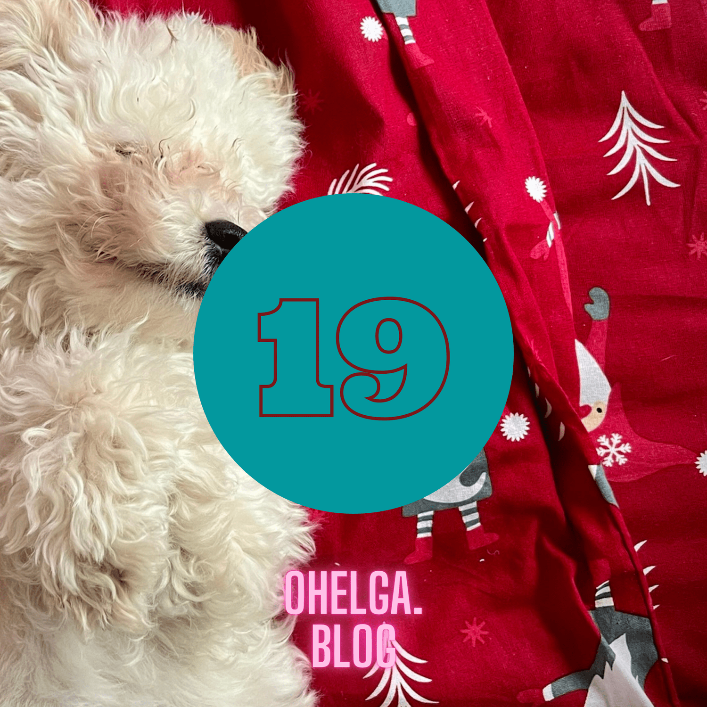

Dimmad belysning, röd sammetsklänning, fyrkantig mick… Så är scenen när vi kliver in på den. Päivän versio tulee aika mahtavasta jukeboxista!
Apple Music:
Scott Bradlee’s Postmodern Jukebox, Miche Braden: O Holy Night
Spotify:
Scott Bradlee’s Postmodern Jukebox, Miche Braden: O Holy Night

Kommentit / Kommentarer (2)
<p>Det här tyckte jag om. Fin känsla, och omväxlande med jazzversion. Egentligen var det det lyckliga pianot som gjorde den här låten. 8,5 kanske.</p>
<p>Hede var int na roko. Som vi säger i Österbotten och som betyder: ganska bra. Karn har riktigt bra bra röst. En sak som jag, eller kanske vi, inte talat så mycket om är uttrycket. En orkesterledare som delgav sin syn på saken tog som exempel att många kända trubadurer med skrovliga röster och dålig tonträff kan leva på uttrycket. Eller ta Håkan Hellströms som sjunger rysligt falskt men fyller nya Ulleviarean med 90000 pers vid varje spelning. Att bedöma musik är svårt. </p>